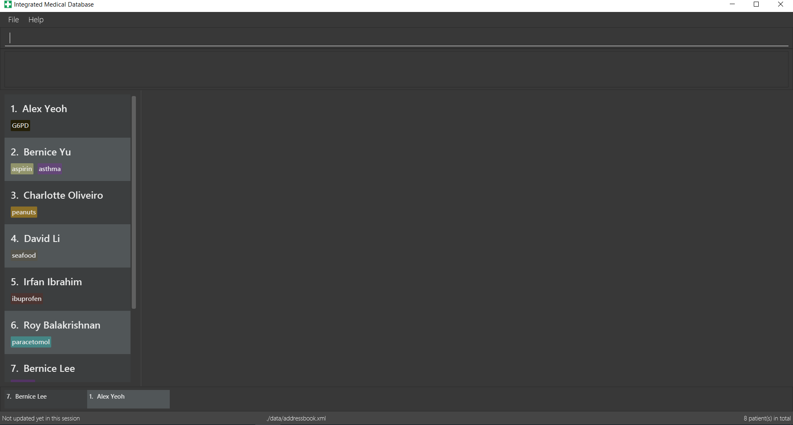

By: Team W15-B2 Since: March 2018 Licence: MIT
1. Introduction
Integrated Medical DataBase (IMDB) is a desktop records management application targeted at private clinics that may have multiple branches. It aims to replace how private clinics handle the management of patient records, making the process much more easier and efficient. IMDB is optimized for those who prefer to work with a Command Line Interface (CLI) while still having the benefits of a Graphical User Interface (GUI). This makes it perfect for doctors or staff who can type faster than they can navigate with a mouse. If your clinic has medical staff who can type fast, IMDB can get your patient management tasks done faster than traditional pen and paper or even normal GUI apps. Head to Section 2, “Quick Start” to get started.
The symbols which are used in the User Guide as well as their meaning are listed below:
|
Information |
|
Tips |
|
Warning |
|
Specific user only command. |
|
Command is undoable. |
2. Quick Start
If this is your first time running IMDB, follow the following steps to ensure a successful installation of IMDB:
-
Ensure you have Java version
1.8.0_60or later installed in your Computer.Having any Java 8 version is not enough.
This app will not work with earlier versions of Java 8. -
Download the latest
imdb.jarhere. -
Copy the file to the folder you want to use as the home folder for IMDB.
-
Double-click the file to start the app. The GUI should appear in a few seconds as shown in the Figure 1 below.
Figure 1: IMDB in action -
Type the command in the command box and press Enter to execute it.
e.g. typinghelpand pressing Enter will open the help window. -
Try out the commands below to get a feel of the app:
-
login: launches the login GUI. Enter "bob" for username and "password456" for password. This will log you into the IMDB as Bob. Note that some commands will not work unless you are logged in. -
list: lists all patients. -
select2* : displays the information of the 2nd patient shown in the current list. -
addn/John Doe ic/S1234567A p/98765432 e/johnd@example.com a/John street, block 123, #01-01 dob/11/11/1991 b/B+: adds a patient namedJohn Doeto the IMDB. -
delete3: deletes the 3rd patient shown in the current list. -
exit: exits the app.
-
For more information on the various commands, refer to Section 3, “Features” for the specific details of each command.
3. Features
UI Walkthrough
Before introducing the commands, a brief walkthrough of the user interface is shown in Figure 2 below.
-
Command box: the user types the command here
-
Command result: the command result message will be displayed here after a command is entered
-
Multipurpose panel: the patient’s details and appointments will be displayed here
-
Patient list panel: the list of patients in the database is displayed
-
Visiting queue panel: the list of patients who are currently waiting for consultation is displayed
Command Format
-
Words in
UPPER_CASEare the parameters to be supplied by the user e.g. inadd n/NAME,NAMEis a parameter which can be used asadd n/John Doe. -
Some commands have aliases that can be used to replace the command word. e.g.
add n/John Doecan be written asa n/John Doeinstead. For more details, please check the format of each command or refer to Section 5, “Command Aliases”. -
Items in square brackets are optional e.g
n/NAME [c/CONDITION]can be used asn/John Doe c/peanutsor asn/John Doe. -
Items with
… after them can be used multiple times including zero times e.g.[c/CONDITION]…can be used asc/peanuts,c/G6PD c/aspirinetc. -
Parameters can be in any order e.g. if the command specifies
n/NAME p/PHONE_NUMBER,p/PHONE_NUMBER n/NAMEis also acceptable.
3.1. General Commands
The commands listed in this section are related to the general usage of IMDB.
3.1.1. Viewing help : help
Opens the user guide in a separate window.
Format: help
3.1.2. Logging into the system: login [since v1.2]
Opens a window for the user to log into the IMDB with a matching username and password as shown in Figure 4 below.
There are two placeholder accounts currently in the IMDB. There is alice, who is a doctor, and bob, who is a medical staff member. Some commands are restricted based on which role the user is logged into.
Format: login

Examples:
-
login
Username: alice
Password: password123
Logs the user in as alice, who is a doctor as shown in Figure 5 below.

-
login
Username: bob
Password: password456
Logs the user in as bob, who is a medical staff as shown in Figure 6 below.
3.1.3. Listing entered commands : history
Lists all the commands that you have entered in reverse chronological order.
Format: history
|
Pressing the ↑ and ↓ arrows will display the previous and next input respectively in the command box. |
3.1.4. Undoing previous command : undo
Restores the IMDB to the state before the previous undoable command was executed.
Format: undo
|
Undoable commands: those commands that modify the IMDB’s content ( |
Examples:
-
delete 1
list
undo
Reverses thedelete 1command. -
select 1
list
u
Theundocommand fails as there are no undoable commands executed previously. -
delete 1
clear
undo
Reverses theclearcommand.
undo
Reverses thedelete 1command.
3.1.5. Redoing the previously undone command : redo
Reverses the most recent undo command.
Format: redo
| This command is undoable. |
Examples:
-
delete 1
undo
Reverses thedelete 1command.
redo
Reapplies thedelete 1command. -
delete 1
redo
Theredocommand fails as there are noundocommands executed previously. -
delete 1
clear
undo
Reverses theclearcommand.
undo
Reverses thedelete 1command.
r
Reapplies thedelete 1command.
r
Reapplies theclearcommand.
3.1.6. Clearing all entries : clear
Clears all entries from the IMDB.
Format: clear
| This command is undoable. |
|
This command will clear all the patient entries in IMDB. Please proceed with caution. |
| If you have accidentally entered this command, you can revert IMDB back to its previous state with the undo command. |
3.1.7. Logout : logout
Logs the user out of the IMDB.
Format: logout
3.1.8. Exiting the program : exit
Exits the program. This also logs the user out of the IMDB.
Format: exit
3.1.9. Encrypting data files [coming in v2.0]
Data encryption will be implemented in v2.0 to improve security and ensure confidentiality of patients' information.
3.1.10. Centralising the database [coming in v2.0]
IMDB will be able to switch from standalone mode to server/client mode in v2.0 to centralise the database at the server in the main branch.
3.1.11. Searching for drug information from a drug information website [coming in v2.0]
IMDB will be able to search for relevant drug information from an official website so that doctors will not administer the wrong drug.
3.1.12. Adding doctor and medical staff accounts [coming in v2.0]
There will be an administrator role which can add a new username and password to the IMDB, which will allow a new doctor or medical staff to log into the system.
3.2. Patient Commands
The commands listed in this section enables the management of patients’ records and details.
3.2.1. Listing all patients : list
Shows a list of all patients in the IMDB.
Format: list
3.2.2. Adding a patient: add
Adds a patient to the IMDB
Format: add n/NAME ic/NRIC p/PHONE_NUMBER e/EMAIL a/ADDRESS dob/DOB b/BLOOD TYPE [c/CONDITION]…
| This command is undoable. |
| A patient can have any number of conditions (including 0). |
Examples:
-
add n/John Doe ic/S1234567A p/98765432 e/johnd@example.com a/John street, block 123, #01-01, dob/01/01/1991 b/A-
Adds a new patient named John Doe. -
a n/Betsy Crowe ic/NRIC c/peanuts e/betsycrowe@example.com a/Newgate Prison p/1234567 dob/12/12/1992 b/B+ c/aspirin
Adds a new patient named Betsy.
3.2.3. Deleting a patient : delete
Deletes the specified patient from the IMDB.
Format: delete INDEX
| This command is undoable. |
| If the specified patient is in the queue, you have to remove the patient from the queue before deleting the patient. |
Examples:
-
list
delete 2
Deletes the 2nd patient in the IMDB. -
find Betsy
d 1
Deletes the 1st patient in the results of thefindcommand.
3.2.4. Editing a patient : edit
Edits an existing patient in the IMDB.
Format: edit INDEX [n/NAME] [ic/NRIC] [p/PHONE] [e/EMAIL] [a/ADDRESS] [dob/DOB] [b/BLOOD TYPE][c/CONDITION]…
| This command is undoable. |
Examples:
-
edit 1 p/91234567 e/johndoe@example.com
Edits the phone number and email address of the 1st patient to be91234567andjohndoe@example.comrespectively. -
e 2 n/Betsy Crower c/
Edits the name of the 2nd patient to beBetsy Crowerand clears all existing conditions.
3.2.5. Editing remarks for a patient : remark [since v1.2]
Edits the remarks for a patient specified by the index number used in the last patient listing.
Format: remark INDEX r/[REMARK]
| This command is undoable. |
Examples:
-
list
remark 1 r/has a pacemaker
Edits the remark for the first patient tohas a pacemaker. -
find Betsy
remark 1 r/
Removes the remark for the first patient.
3.2.6. Adding a condition to an existing patient: addc [since v1.3]
Adds a medical condition to an existing patient.
Format: addc INDEX c/[CONDITION]
| This command is undoable. |
Examples:
-
addc 1 c/aspirin
Addsaspirinto the list of conditions that the patient at index1has. -
ac 2 c/asthma
Addsasthmato the list of conditions that the patient at index2has.
3.2.7. Removing the condition of an existing patient: delc [since v1.4]
Removes a medical condition to an existing patient.
Format: delc INDEX c/[CONDITION]
| This command is undoable. |
Examples:
-
delc 1 c/aspirin c/asthma
Removesaspirinandasthmafrom the list of conditions that the patient at index1has. -
dc 2 c/asthma
Removesasthmafrom the list of conditions that the patient at index2has.
3.2.8. Locating patients by name: find
Finds patients whose names contain any of the given keywords.
Format: find KEYWORD [MORE_KEYWORDS]
Examples:
-
find John
ReturnsjohnandJohn Doe -
f Betsy Tim John
Returns any patient having namesBetsy,Tim, orJohn
3.2.9. Selecting a patient : select
Selects the patient identified by the index number used in the last patient listing and loads up that patient’s details.
Format: select INDEX
Examples:
-
list
select 2
Selects the 2nd patient in the IMDB. -
find Betsy
s 1
Selects the 1st patient in the results of thefindcommand.
3.2.10. Viewing and editing the medical records for a patient : record [since v1.4]
Views the medical record at the specified record index for a patient specified by the index number used in the last patient listing.
Format: record INDEX in/[RECORD INDEX]
| This command is undoable. |
| This command is only accessible to doctors. |
Examples:
-
list
record 1 in/1
Displays the first medical record for the first person in the result of the list command as shown in Figure 7 below.

3.2.11. Deleting the medical records for a patient : remover [since v1.4]
Deletes the medical record specified by the record index for a patient specified by the index number used in the last patient listing.
Format: remover INDEX in/[RECORD INDEX]
| This command is undoable. |
| This command is only accessible to doctors. |
Examples:
-
list
remover 1 in/1
Deletes the first medical record for the first person in the result of the list command.
3.2.12. Printing a patient’s formatted medical records : print [since v1.4]
Formats and prints a patient’s medical records into a pdf file. This pdf file is located in the same directory as the IMDB application.
Format: print INDEX
| This command is only accessible to doctors. |
3.2.13. Attaching and viewing the X-ray scans for a patient [coming in v2.0]
IMDB will be able to attach images(X-ray scans) to a patient and retrieve the images for viewing.
3.3. Visiting Queue Commands
The commands listed in this section are realted to the management of the visiting queue of the clinic.
3.3.1. Adding a patient into the visiting queue with index: addq [since v1.2]
Adds a patient to the end of the visiting queue (registration).
Format: addq INDEX
| This command is undoable. |
| This command is only accessible to medical staff. |
Examples:
-
list
addq 3
Adds the third person in the result of the list command into the visiting queue. -
find bernice
aq 2
Adds Bernice Lee into the visiting queue as shown in Figure 9 below.

3.3.2. Removing a patient from the visiting queue: removeq [since v1.2]
Removes the first patient from the visiting queue (check-out).
Format: removeq
| This command is undoable. |
| This command is only accessible to medical staff. |
Examples:
-
removeq
Removes the first patient in the queue. -
rq
Removes the first patient in the queue.
3.3.3. Removing a patient from the visiting queue by index: removeq [since v1.5rc]
Removes a patient from the visiting queue by the index number of the current list view (check-out).
Format: removeq INDEX
| This command is undoable. |
| This command is only accessible to medical staff. |
Examples:
-
removeq 4
Removes the fourth patient in the patient list from the visiting queue. -
rq 2
Removes the second patient in the patient list from the visiting queue.
3.4. Appointment Commands
The commands listed in this section are related to the management of patients’ appointments.
3.4.1. Adding a medical appointment with: addappt [since v1.4]
Adds a medical appointment to a patient.
Format: addappt PATIENT_NAME DATE TIME
| This command is only for medical staff. |
Examples:
-
viewappt
addappt 1 19/6/2018 1000
viewappt
Adds a medical appointment for the first person in the list on 19/3/2018 at 10am as shown in Figure 10 below.

-
aa 1 23/7/2019 1430
Adds a medical appointment for the first person in the list on 23/3/2018 at 2:30pm.
3.4.2. Viewing medical appointments by index: viewappt [since v1.3]
Shows the list of medical appointments of a patient.
Format: viewappt PATIENT_NAME
| This command is for both doctor and medical staff. |
Examples:
-
viewappt 1
Lists the medical appointments made by the first patient in the list as shown in Figure 11 below.
-
va 2
Lists the medical appointments made by the second patient in the list.
3.4.3. Viewing medical appointments in calendar: viewappt [since v1.4]
Shows the list of medical appointments in a calendar month view.
Format: viewappt
Examples:
-
viewappt
Lists the medical appointments in the current month. User can also navigate to other months to view medical appointments for that particular month as shown in Figure 12 below. -
va
Lists the medical appointments in the current month. User can also navigate to other months to view medical appointments for that particular month as shown in Figure 12 below.
3.4.4. Deleting a medical appointment by patient name and appointment index number: delappt [since v1.3]
Deletes the medical appointment at the given index of a patient specified by their name.
Format: delappt PATIENT_NAME APPOINTMENT_INDEX_NO
| This command is only for medical staff. |
Examples:
-
viewappt 1
delappt 1 19/6/2018 1200
Deletes the medical appointment on 19/6/2018 12pm made by the first patient in the list as shown in Figure 13 below.
-
va 2
da 2 13/7/2018 1430
viewappt
Deletes the medical appointment on 13/7/2018 2:30pm made by the second patient in the list.
3.4.5. Viewing the schedule for a patient across all specialists [coming in v2.0]
IMDB will be able to view the schedule for a patient across all specialists so that medical staff can arrange non-conflicting appointments.
3.4.6. Viewing the duty schedule for doctors across all specialists [coming in v2.0]
IMDB will be able to view the duty schedule for doctors across all specialists so that medical staff can make arrangements if patient specifies which doctor he or she would like to visit for the appointment.
3.5. Saving Data
IMDB data are saved in the hard disk automatically after any command that changes the data.
There is no need to save manually.
4. FAQ
Q: How do I transfer my data to another computer?
A: Install the app in the other computer and overwrite the empty data file it creates with the file that contains the data of your previous IMDB folder.
5. Command Aliases
Below is a table with the aliases of some commands.
| Command | Alias |
|---|---|
|
|
|
|
|
|
|
|
|
|
|
|
|
|
|
|
|
|
|
|
|
|
|
|
|
|
|
|
|
|
|
|
|
|
|
|
|
|
|
|
|
|
|
|
|
|
|
|
6. Command Summary
This section provides a summary of command syntax and aliases.
-
Add
addora n/NAME ic/NRIC p/PHONE_NUMBER e/EMAIL a/ADDRESS dob/DOB b/BLOOD TYPE [c/CONDITION]…
e.g.addora n/James Ho ic/S1234567A p/22224444 e/jamesho@example.com a/123, Clementi Rd, 1234665 dob/11/11/1991 b/A+ c/peanuts c/aspirin -
Add condition :
addcorace.g.addc 2 c/CONDITIONorac 1 c/CONDITION -
Add patient into visiting queue :
addqoraqe.g.addq 2oraq 1 -
Add new appointment :
addapptoraa
e.g.addappt 1 19/6/2018 1200oraa 1 19/6/2018 1200 -
Clear :
clearorc -
Delete :
deleteordorrm INDEX
e.g.deleteordorrm 3 -
Delete appointment :
delapptorda
e.g.delappt 1 19/6/2018 1200orda 1 19/6/2018 1200 -
History :
historyorhi -
Undo :
undooruorz -
Edit :
editore INDEX [n/NAME] [ic/NRIC] [p/PHONE_NUMBER] [e/EMAIL] [a/ADDRESS] [dob/DOB] [b/BLOOD TYPE] [c/CONDITION]…
e.g.editore 2 n/James Lee e/jameslee@example.com -
Find :
findorf KEYWORD [MORE_KEYWORDS]
e.g.findorf James Jake -
Help :
helporh -
Login :
loginorlg -
List :
listorls -
Print :
printorp -
Record :
recordorrec INDEX in/[RECORD INDEX]
e.g.recordorrec 1 in/2 -
Redo :
redoorrory -
Remark :
remarkorrk INDEX r/[REMARK]
e.g.remarkorrk 1 r/Likes to drink coffee. -
Remove condition :
delcordce.g.delc 2 c/CONDITIONordc 1 c/CONDITION -
Remove patient from visiting queue :
removeqorrq -
Remove patient from visiting queue by index :
removeqorrqe.g.removeq 2orrq 1 -
Remover :
removerorrr INDEX in/[RECORD INDEX]
e.g.removerorrr 1 in/2 -
Select :
selectors INDEX
e.g.selectors 2 -
View appointments in calendar :
viewapptorva -
View appointments by index :
viewapptorvae.g.viewappt 1orva 1